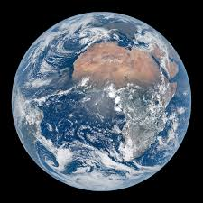
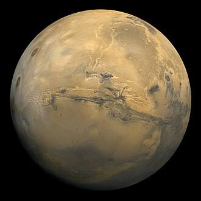

1. Меркурій

Меркурій — найменша планета Сонячної системи і найближча до Сонця. Оскільки він не має щільної атмосфери, планета не може утримувати тепло.
Цікаві факти про Меркурій:
- Через відсутність атмосфери температура на поверхні коливається від неймовірних +430 °C вдень до -180 °C вночі.
- Меркурій не має жодного природного супутника чи кілець.
- Обертання навколо Сонця (рік) триває всього 88 днів, проте один оберт навколо своєї осі (доба) триває аж 58,6 земних днів.
2. Венера

Венера — друга планета від Сонця і найближча до Землі за розмірами. Вона вкрита густим шаром хмар із сірчаної кислоти, які створюють потужний парниковий ефект.
Цікаві факти про Венеру:
- Це найгарячіша планета Сонячної системи (середня температура становить близько +465 °C), навіть гарячіша за ближчий до Сонця Меркурій.
- Венера обертається у зворотний бік порівняно з більшістю планет (сонце там встає на заході, а сідає на сході).
- Венера є найяскравішим об'єктом на нічному небі після Місяця, через що її часто називають «Ранковою зіркою».
3. Земля

Земля — третя планета від Сонця та наш рідний дім. Це єдиний відомий нам світ у Всесвіті, де існує життя, а поверхня рясніє рідкою водою.
Цікаві факти про Землю:
- Понад 70% поверхні нашої планети вкрито океанами, що дало Землі назву «Блакитна планета».
- Атмосфера Землі складається переважно з азоту (78%) та кисню (21%), що ідеально підходить для дихання живих істот.
- Земля має один природний супутник — Місяць, який викликає припливи та відпливи в океанах і стабілізує нахил земної осі.
4. Марс

Марс — четверта планета від Сонця, відома як «Червона планета» через високий вміст оксиду заліза (іржі) у своєму ґрунті та пилу.
Цікаві факти про Марс:
- На Марсі знаходиться гора Олімп — найвищий вулкан у Сонячній системі, висота якого становить близько 21 кілометра (майже втричі вище за Еверест).